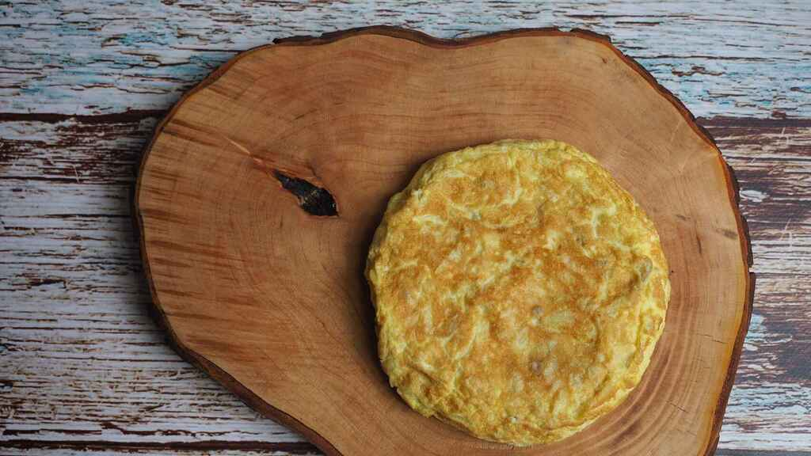

Aqui hablaremos de como hacer una tortilla de patata y los ingredientes que iremos a usar
| Ingredientes | cantidad | Precio |
|---|---|---|
| Huevo | 4 | 1.99€ |
| Cebolla | 1 | 1.99€ |
| Aceite | Cuchara y media | 3.40€ |
Paso de la creacion de la tortilla
Primer paso: cortar y freír las patatas y la cebolla Pelamos y lavamos las patatas, las cortamos en rodajas finas al igual que la cebolla. Ponemos ambas cosas en una sartén y cubrimos de aceite de oliva virgen extra, dejamos que se hagan a fuego medio-suave hasta que comiencen a dorarse. Sabréis que las patatas están hechas cuando comiencen a romperse, con la paleta. Para que la tortilla esté jugosa es importante que las patatas se hagan bien y se confiten, porque no hay nada peor que una tortilla con las patatas medio crudas. Por lo tanto, paciencia con este paso.
Segundo paso: mezclar con los huevos Las sacamos de la sartén y escurrimos bien. Ponemos en un cuenco grande, aparte batimos los huevos y los añadimos a las patatas y a la cebolla, añadimos un poco de sal y mezclamos. Dejamos un par de minutos que se mezclen bien. Aquí hay quien prefiere dejar las patatas enteras y quien prefiere machacarlas un poco con la paleta para que se mezclen bien con el huevo.
Tercer paso: cuajar la tortilla Ponemos en la sartén un par de cucharadas de aceite de oliva virgen extra y vertemos todo. Al principio rompemos un poco, como si fuéramos a hacer un revuelto, luego vamos dándole forma por los bordes. Cuando veamos que ya está cuajada por abajo ponemos un plato o una tapa encima de la sartén y le damos la vuelta rápidamente. Ponemos de nuevo la sartén en el fuego y deslizamos la tortilla desde el plato a la sartén. Dejamos unos minutos más (2 o 3 si te gusta más cuajada, menos si te gusta jugosa) para que se termine de hacer y ya tenemos lista nuestra tortilla de patatas.
El restaurante de pepeDale clic para que sepas mas sobre pepe.